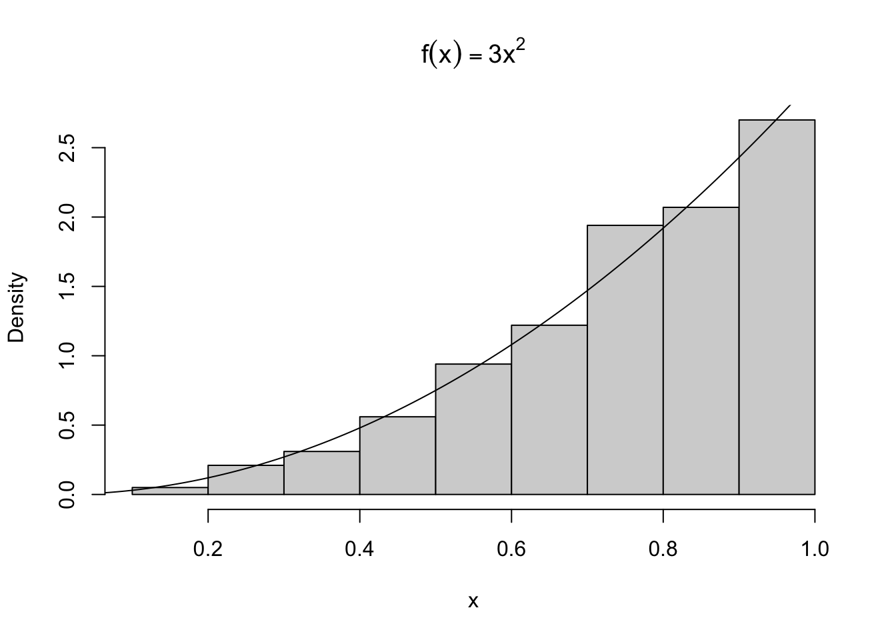
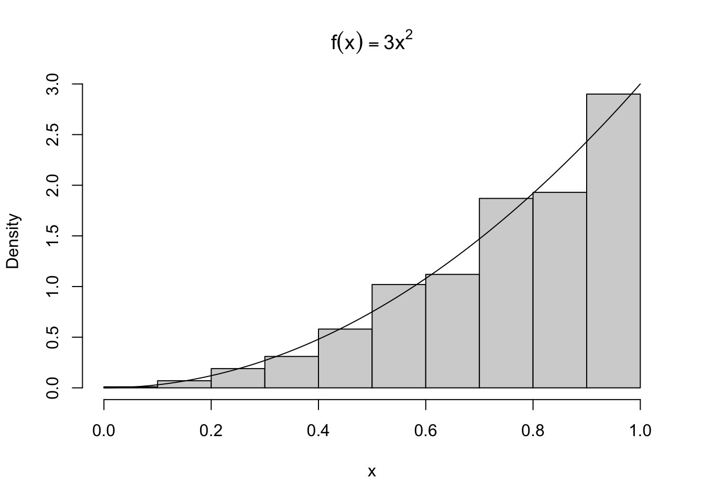
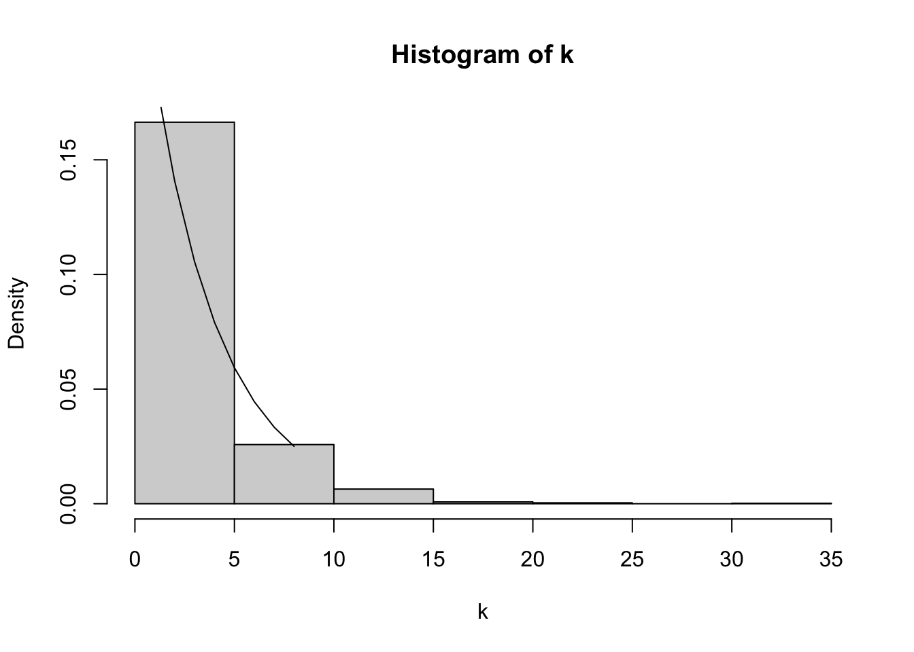

Chapter 2 乱数の発生
Rには様々な分布から乱数を生成させる関数があり、関数名の頭文字がその用途を表す。
r: 擬似乱数(random generator)d: 密度関数(density/mass fonction)p: 分布関数(cummulative distribution function)q: 分位点関数(quantile function)
二項分布(Binomial)の場合、\(Bin(n, p) = {}_n C_k p^{k} (1-p)^{n-k}\)
dbinom(x, size, prob)rbinom(n, size, prob)pbinom()qbinom()
一様疑似乱数(uniform pseudo-random number generator)を生成するにはrunifを使う。
- Uniform(0,1)からn個の一様乱数を生成する
runif(n) - Uniform(a,b)からn個の一様乱数を生成する
runif(a,b,n) - Uniform(0,1)から(n,m)行列の一様乱数を生成する
matrix(runif(n*m), n, m
x <- sample(1:3, size=10, replace=TRUE, prob=c(.2, .3, .5))
table(x)有限母集団(finite population)からサンプルを生成するにはsampleを使う。
sample(0:1, size=10, replace=TRUE): コイン投げsample(letters): 小文字- 指定した分布からサンプルする
sample(1:3, size=10, replace=TRUE, prob=c(.2, .3, .5)
2.1 逆変換法
Ex3.2
n <- 1000
u <- runif(n)
x <- u^(1/3)
hist(x, prob=TRUE, main=expression(f(x) == 3*x^2))
y <- seq(0, 1, .01)
lines(y, 3*y^2)
Ex3.3(指数分布)
n <- 1000
u <- runif(n)
lambda <- 1
x <- - log(u) / lambda
hist(x, prob=TRUE)
y <- seq(0, 8, .1)
lines(y, dexp(y))
Ex3.4(ベルヌーイ分布)
n <- 1000
p <- 0.4
u <- runif(n)
x <- as.integer(u > 0.6)
mean(x)## [1] 0.378var(x)## [1] 0.2353514Ex3.5(幾何分布)
n <- 1000
p <- 0.25
u <- runif(n)
k <- ceiling(log(1-u) / log(1-p)) - 1
hist(k, prob=TRUE)
y <- seq(0, 8, 1)
lines(y, dgeom(y, prob = 0.25))
2.2 受容棄却法
Ex3.5(ベータ分布)
n <- 10000
k <- 0 # accepted数
j <- 0 # iteration回数(1000個の乱数を作成するのに要した)
y <- numeric(n)
while(k < n) {
u <- runif(1)
j <- j + 1
x <- runif(1) # gから生成
if(x * (1-x) > u) {
k <- k + 1
y[k] <- x
}
}
p <- seq(.1, .9, .1)
Qhat <- quantile(y, p) # sample
Q <- qbeta(p, 2, 2) # theoretical
se <- sqrt(p * (1-p) / ( n * dbeta(Q, 2, 2)^2))
round(rbind(Qhat, Q, se), 3)## 10% 20% 30% 40% 50% 60% 70% 80% 90%
## Qhat 0.195 0.288 0.359 0.430 0.496 0.563 0.634 0.711 0.807
## Q 0.196 0.287 0.363 0.433 0.500 0.567 0.637 0.713 0.804
## se 0.003 0.003 0.003 0.003 0.003 0.003 0.003 0.003 0.0032.3 変換法
- \(Z \sim N(0,1)\) のとき \(V = Z^{2} \sim \chi^{2}(1)\)